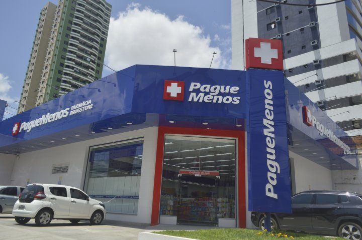

PAGUE MENOS:
Farmácias Pague Menos ou Pague Menos é uma empresa brasileira de varejo de produtos farmacêuticos com sede em Fortaleza, Ceará. É considerada a segunda maior rede do setor no país. Em 2020, seu faturamento foi de R$7,3 bilhões, com mais de 1.105 lojas em todos estados brasileiros.
Segundo a Associação Brasileira de Redes de Farmácias e Drogarias (ABRAFARMA), é a segunda maior rede de farmácias do Brasil com aproximadamente 1,2 mil lojas físicas, 20 mil funcionários e presença em 327 Municipios.
HISTÓRIA
Em 1981, a instituição foi fundada no bairro fortalezense de Carlito Pamplona. Em 1985, adotou de forma pioneira no Brasil o conceito de drugstore, passando a comercializar, em adição aos medicamentos, produtos de higiene, beleza e conveniência em um modelo de auto serviço.
Em 1993, a rede abriu sua primeira loja fora do estado do Ceará, na cidade de Natal, no Rio Grande do Norte. No mesmo ano, inaugurou seu braço de manipulação de medicamentos.
Em 1997, a Empresa criou o Encontro de Mulheres Pague Menos o maior evento feminino do Brasil, visando promover saude, e maior qualidade de vida para as mulheres.[5]
Em 2006, em parceria com o Governo Federal, contribuiu para a criação do programa Farmácia Popular.[6]
Em 2010, nasce o Circuito de Corridas Pague Menos uma iniciativa promovida anualmente em 10 cidades do territorio nacional que conta com a participaçao de, em media, 6.000 pessoas. Esse evento tem como objetivo promover a saude na populacao por meio do incentivo a pratica de esportes.[7]
Em 2011, a Pague Menos lançou a 1ª edição da Revista Viva Sempre Bem, que junto ao programa TV e Portal inovou a visão em beleza e saúde da mulher brasileira, configurando a Plataforma Sempre Bem.[5] No mesmo ano foi realizado também o registro de companhia aberta da empresa na CVM.[6]
Entre 2011 e 2012, ensaiou uma fusão com a Ultrafarma, que acabou não avançando.[8][9] Em dezembro de 2015, a companhia recebeu um aporte da gestora de investimentos General Atlantic, que se torna a partir de então de sócia estratégica da Pague Menos, com 17% de participação no negócio.[10]
Em 2018, a Pague Menos fez um marco com a inauguração da maior farmácia em toda a America Latina - a loja 1000. Localizada em Fortaleza/CE, a loja possui três andares e conta com variedades no setor de dermocosméticos, além de área de café.[11] Em 2019, a Pague Menos lançou também sua primeira loja conceito, na praia de Iracema de Fortaleza, criando experiências inovadoras para os consumidores. A arquitetura e design modernos abarcam espaços diferenciados para o consumo.[12]
Em 2020, a empresa abriu capital na Bolsa de Valores de São Paulo com suas ações cotadas a R$ 8,50 no IPO, bem abaixo do esperado, mesmo assim, conseguiu captar cerca de R$ 746,9 milhões de reais.[13]
Em maio de 2021, o Grupo Pague Menos comprou a empresa Extrafarma por R$ 700 milhões. A Extrafarma fazia parte das empresas do Grupo Ultra.

Programa Sempre Bem
Em 2008, lançou o programa de TV próprio Sempre Bem, na Rede TV!, com a produção de conteúdo exclusivo de saúde, beleza e bem-estar e no ano seguinte, tornou-se a primeira rede de farmácias presente em todas as capitais estaduais do país. O programa já passou também por emissoras como a Bandeirantes e atualmente é parte da grade de programação do SBT, sendo exibido todos os domingos as 8h15 da manhã.